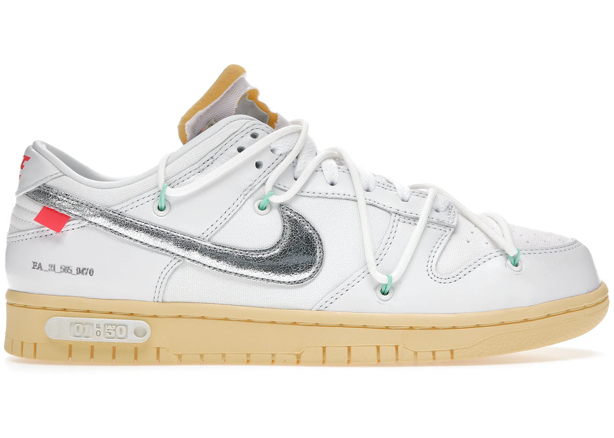

Nike Dunk Low Off-White Lot 1


¡Se vendieron 35 en los últimos 3 días!
Última venta:
549€
Detalles del producto
| Estilo | DM1602-127 |
| Color | WHITE/METALLIC SILVER-BUTTER |
| Precio retail | 180 US$ |
| Fecha de lanzamiento | 02/08/2021 |
| Accesorios incluidos | WHITE OW ZIPTIE |
Descripción del producto
Los Nike Dunk Low Off-White Lot 1 presentan un upper de lona blanca con superposiciones de cuero blanco y Swooshes plateados. Con esa base, las suelas amarillas con "Lot 50 of 50" blancos, superposiciones blancas con ojales verdes y detalles naranjas completan el diseño..
El modelo Nike Dunk Low Off-White Lot 1 se lanzó en agosto de 2021 a un precio minorista de $150 USD.